Evaluation, Generalization, and Interpretation
How do we know whether a model has learned something useful that will work on new data?
Machine learning uses data to learn relationships between:
Features (X): available information
Outcome (Y): what we want to predict
Examples:
| Features | Outcome |
|---|---|
| Childrens’ age, smartphone ownership, etc | Hours of sleep |
| Area, Perimeter, MajorAxisLength, MinorAxisLength, Compactness | Type of bean |
| Pixel values | Digit (0–9) |
Goal:
Accurate predictions for new observations.
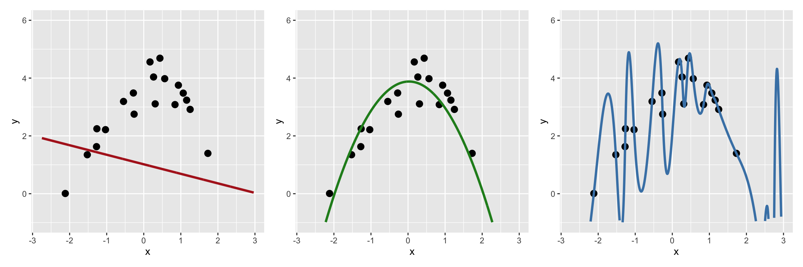
Make illustrations!
When we split the data, should we split randomly?
MNIST: Similar frequencies of digits in each split
Rare event prediction: Predict a rare event, P(event) = 0.1
When we split the data, should we split randomly?
MNIST: Similar frequencies of digits in each split
Rare event prediction: Predict a rare event, P(event) = 0.1
Grouped observations: Multiple observations per person in the data, predict on new persons
\[ \text{accuracy} = \frac{\text{number of correct predictions}}{\text{total number of predictions}} \]
TASK 1A: We aim to predict an event
\[ \text{accuracy} = \frac{\text{number of correct predictions}}{\text{total number of predictions}} \]
Example: We predict an event: 0 = no event, 1 = event
Ans: We will be correct 50% of the time, so accuracy = 0.5
Ans: We will be correct 05% of the time, so accuracy = 0.95
Accuracy depends on the class probabilities, and even a trivial classifier can achieve high accuracy on imbalanced data.
| Predicted positive | Predicted negative | |
|---|---|---|
| Actual positive | True Positive (TP) | False Negative (FN) |
| Actual negative | False Positive (FP) | True Negative (TN) |
| Predicted positive | Predicted negative | |
|---|---|---|
| Actual positive | True Positive (TP) | False Negative (FN) |
| Actual negative | False Positive (FP) | True Negative (TN) |
Accuracy: How often is the model correct?
\[ \text{Accuracy} = \frac{TP+TN}{TP+TN+FP+FN} \]
| Metric | Question |
|---|---|
| Accuracy | Of all predictions, how many were correct? |
| Sensitivity / Recall / True positive rate | Of the actual positives, how many did we identify? |
| Specificity / True negative rate | Of the actual negatives, how many did we identify? |
| Precision | Of the predicted positives, how many were actually positive? |
TASK 1B: Find the formulas, using the confusion matrix, for accuracy, recall, specificity and precision.
| Predicted positive | Predicted negative | |
|---|---|---|
| Actual positive | True Positive (TP) | False Negative (FN) |
| Actual negative | False Positive (FP) | True Negative (TN) |
\[ \text{Accuracy} = \frac{TP+TN}{TP+TN+FP+FN} \]
\[ \text{Sensitivity} = \frac{TP}{TP+FN} \]
\[ \text{Specificity} = \frac{TN}{FP+TN} \]
\[ \text{Precision} = \frac{TP}{TP+FP} \]
Note: Often these metrics will depend on a threshold that we choose.
Prediction task: Will a person commit another crime within 2 years? Yes / No.
Probabilistic prediction (e.g. random forest, neural network): Model outputs class probabilities: P(Yes)
Our choice of threshold k will affect the different metrics in some way.
ROC space = Receiver Operating Characteristic space
By plotting different models’ metrics in the ROC space, we can do model comparison
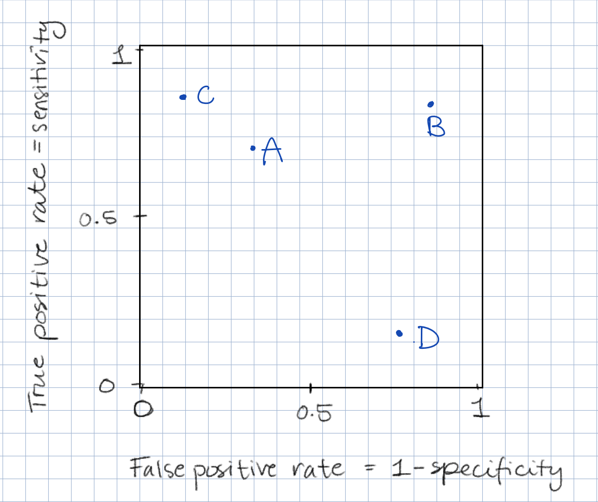
TASK 1C: Which of the four classification models A, B, C or D is best?
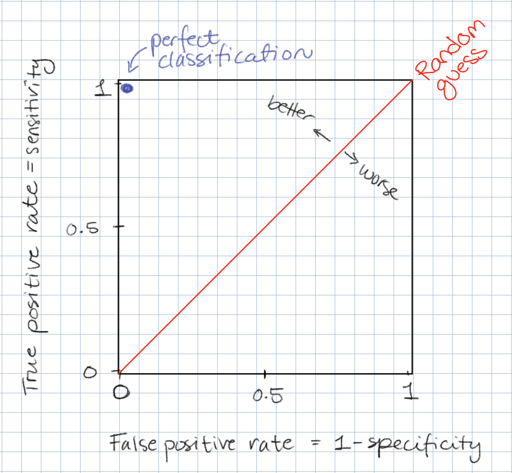
By plotting a probabilistic prediction models’ metrics in the ROC space for all values of a threshold k we get a curve
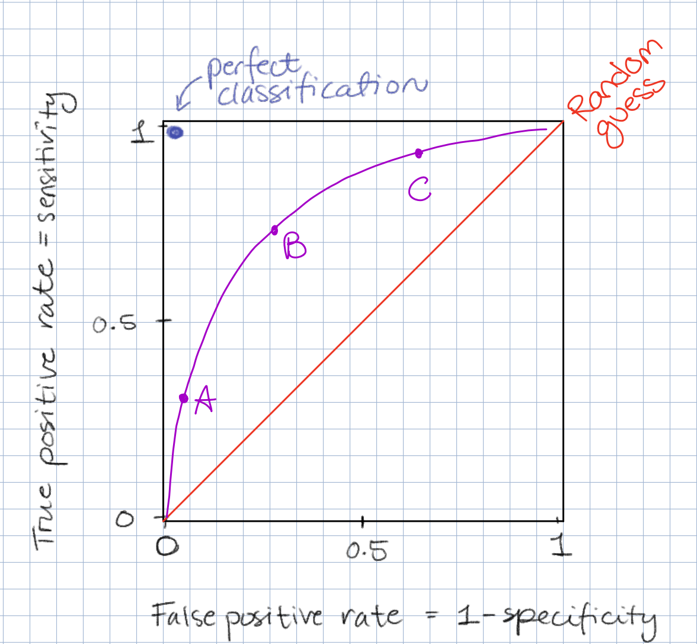
TASK 1D: What are the benefits of choosing thresholds corresponding to A, B or C?
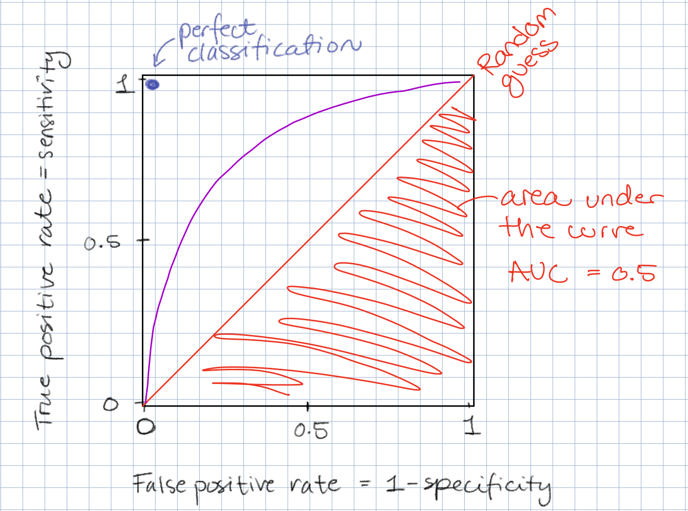
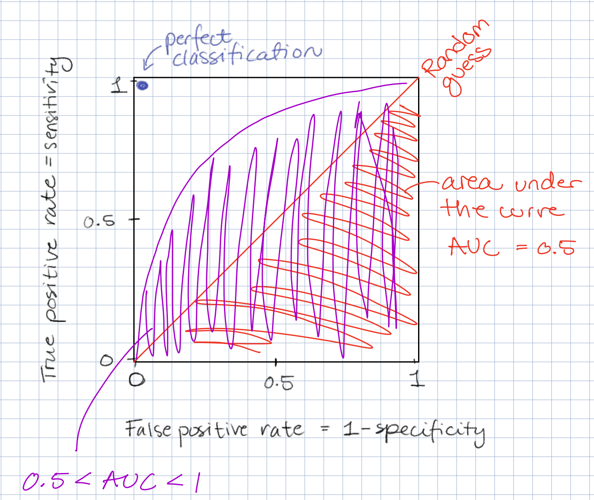
Given a true positive (person did commit a new crime) and a true negative (person did not commit a new crime), the purple model is better than a random guess at discriminating between these two classes.
But again: trouble arises with rare classes
Rare event prediction: Out of 10,000 people, 100 have the disease and 9,900 do not (prevalence = 1 %).
Confusion matrix:
| Predicted disease | Predicted no disease | |
|---|---|---|
| Has disease | 90 | 495 |
| No disease | 10 | 9405 |
Task 1E:
Calculate the true positive rate (sensitivity, recall) and the false positive rate (1 - specificity).
Place the model in ROC-space, does it look good?
Calculate the precision of the model: of all predicted positives, how many were correct?
ROC-curve: True positive rate (sensitivity, recall) vs false positive rate (1 - specificity)
PR-curve: Precision vs Recall
Both ROC and PR curves are constructed by varying the classification threshold.
| ROC curve | PR curve |
|---|---|
| x-axis: False positive rate | x-axis: Recall |
| y-axis: True positive rate (recall) | y-axis: Precision |
| Shows discrimination between classes | Shows the trade-off between recall and precision |
| Random baseline: diagonal (AUC = 0.5) | Random baseline: prevalence of positive class (e.g. 1%) |
PR curves are particularly informative when the positive class is rare and we care about the reliability of positive predictions. —> You will see more of them on Friday
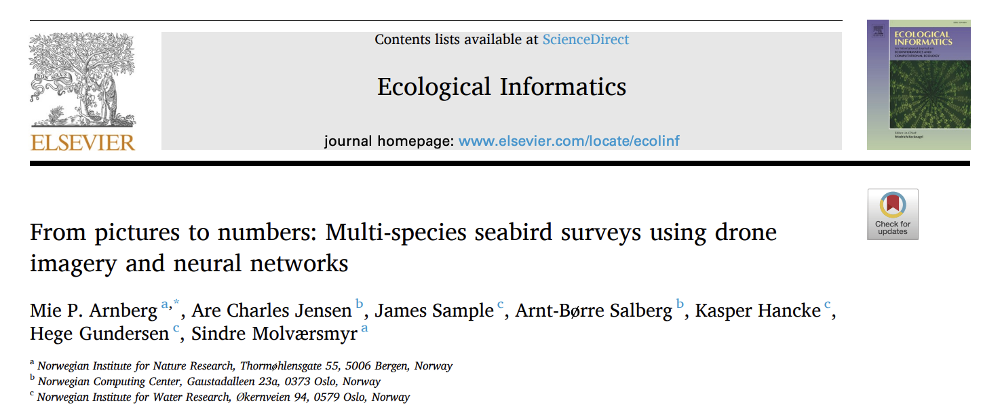
EU’s Ethics guidelines for trustworthy AI (2019)
AI systems should respect ethical principles:
Particular care is needed when AI affects vulnerable groups or when there are power imbalances (e.g., employers vs employees).
AI can bring substantial benefits, but also pose risks and have negative impacts that are difficult to predict or measure (e.g. on democracy, the rule of law, or on the human mind itself.)
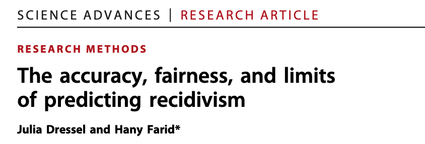
Recidivism: relapse into criminal behavior, rearrest, reconviction, or return to prison after serving a prior sentence
Prediction task: Will a person commit another crime within 2 years? Yes / No
| Model | Information used | Accuracy |
|---|---|---|
| COMPAS (commercial tool) | 137 features; proprietary algorithm | ≈ 65% |
| Humans (average of 20 opinions) | 7 features, including age, sex and criminal history | ≈ 67% |
| Logistic regression | 2 features: age and number of prior convictions | ≈ 67% |
Area under the ROC curve (AUC-ROC):
Use ML only when it actually adds value
For now: Lets assume a ML model was actually much better than humans or logistic regression to predict recidivism
Recall EU Ethics guidelines:
We would want to know
Permutation importance
Idea: If a feature is important for the model, randomly shuffling its values should make the predictions worse.
Example:
Caution: Correlated features complicate interpretation.
Question: How does a feature (e.g., age) affect the model’s predictions?
Partial dependence plots (PDP):
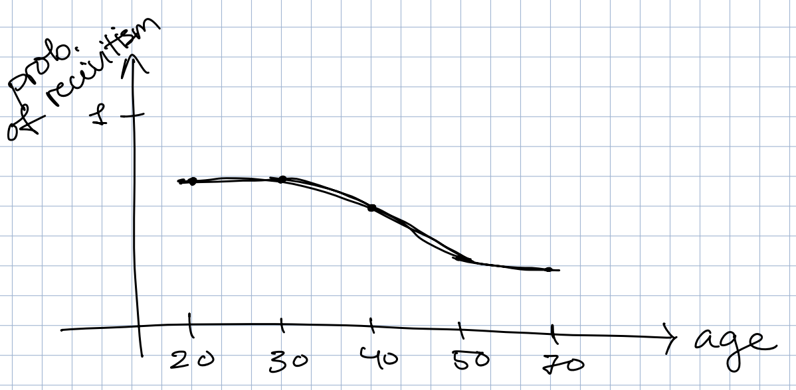
Question: How does a feature (e.g., age) affect the model’s predictions?
Partial dependence plots (PDP):
Problem: We may create unrealistic combinations of features (e.g., a 20-year-old with 30 years of work experience).
Accumulated Local Effects (ALE) plots:
Similar purpose, but examine changes in predictions within small intervals of observed feature values.
Better suited for correlated features.
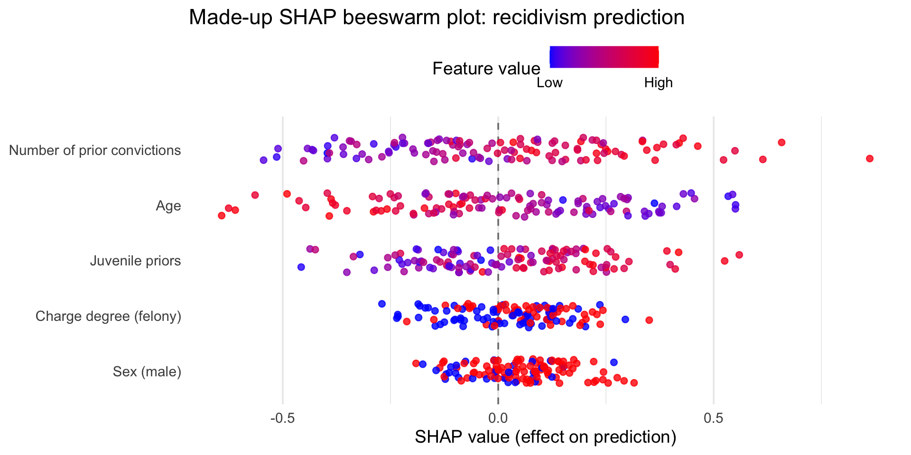
How to read the beeswarm plot:
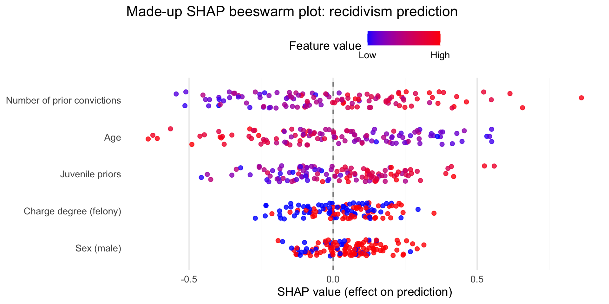
Global interpretation:
The beeswarm plot combines SHAP values from many individuals.
Shows which features are important overall and how they contribute to predictions.
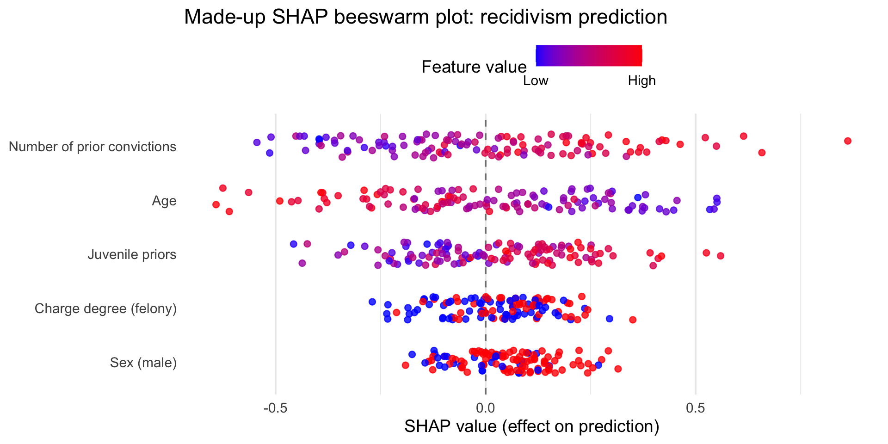
Local interpretation:
Each person has their own SHAP value for every feature.
Select one person and examine their SHAP values across all features.
Explains why the model’s prediction for this person differs from the baseline prediction.
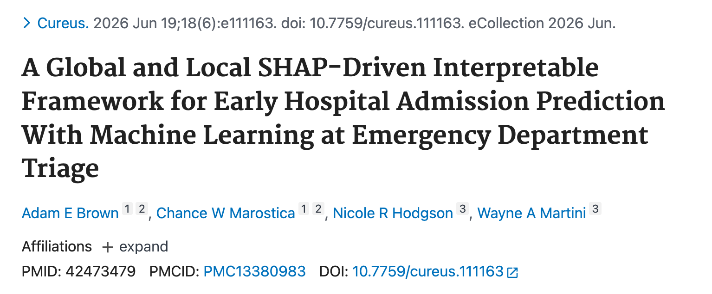